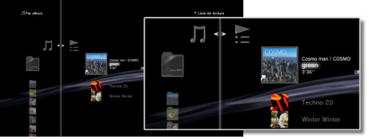
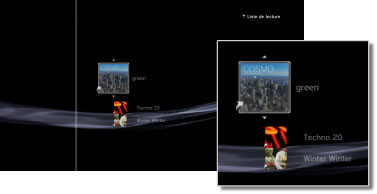

Musique > Utilisation de listes de lecture > Modification de listes de lecture
Modification de listes de lecture
Vous pouvez ajouter, supprimer ou réorganiser les pistes d'une liste de lecture.
Ajout de pistes à des listes de lecture
1. |
Sélectionnez |
|---|---|
2. |
Sélectionnez la liste de lecture à modifier, puis appuyez sur la touche |
3. |
Sélectionnez [Modifier].  |
4. |
À l'aide des touches de navigation |
 (Musique) >
(Musique) >  (Listes de lecture).
(Listes de lecture). .
. , sélectionnez la piste à ajouter à la liste de lecture parmi les pistes sauvegardées sur le stockage système.
, sélectionnez la piste à ajouter à la liste de lecture parmi les pistes sauvegardées sur le stockage système. pour arrêter la modification.
pour arrêter la modification.Suppression de pistes de des listes de lecture
1. |
Sélectionnez |
|---|---|
2. |
Sélectionnez la liste de lecture à modifier, puis appuyez sur la touche |
3. |
Sélectionnez [Modifier]. |
4. |
Sélectionnez la piste à supprimer de la liste de lecture, puis appuyez sur la touche |
 .
.Conseils
- Même si une piste est supprimée d'une liste de lecture, le fichier de musique n'est pas supprimé du stockage système.
- Si une piste ajoutée à une liste de lecture est supprimée du stockage système, elle est aussi automatiquement supprimée de la liste de lecture.
Réorganisation des pistes dans des listes de lecture
1. |
Sélectionnez |
|---|---|
2. |
Sélectionnez la liste de lecture à modifier, puis appuyez sur la touche |
3. |
Sélectionnez [Modifier]. |
4. |
Sélectionnez la piste que vous souhaitez déplacer, puis appuyez sur la touche  |
5. |
Appuyez sur les touches |
 .
.
 , déplacer la piste vers la position de votre choix, puis appuyez sur la touche
, déplacer la piste vers la position de votre choix, puis appuyez sur la touche